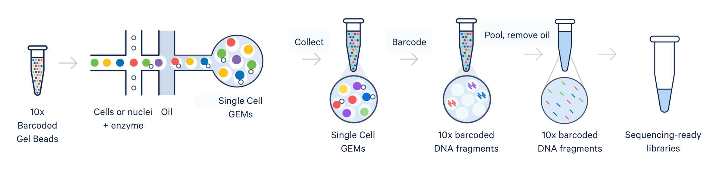
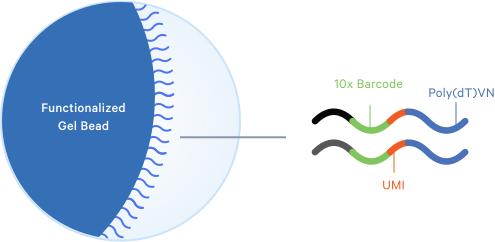
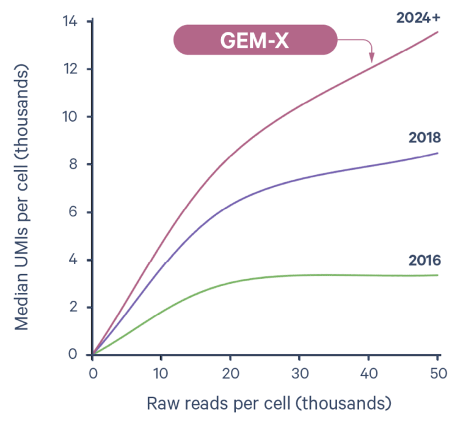
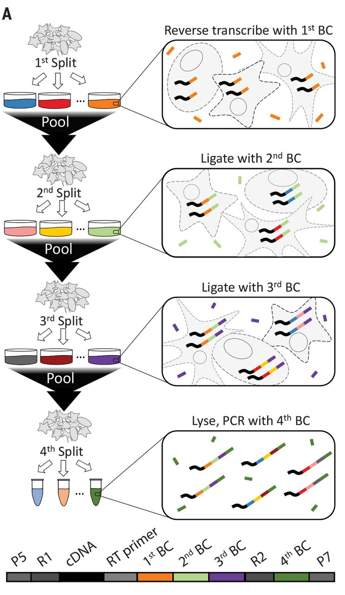
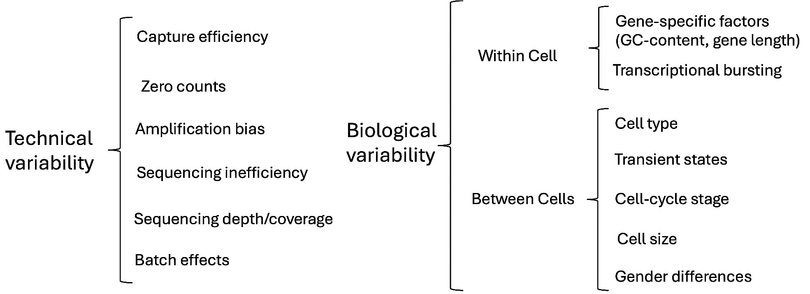

High Resolution Technologies
Acknowledgement Of Country
I’d like to acknowledge the Kaurna people as the traditional owners and custodians of the land we know today as the Adelaide Plains, where I live & work.
I also acknowledge the deep feelings of attachment and relationship of the Kaurna people to their place.
I pay my respects to the cultural authority of Aboriginal and Torres Strait Islander peoples from other areas of Australia, and pay my respects to Elders past, present and emerging, and acknowledge any Aboriginal Australians who may be with us today
Introduction
High Resolution Technologies
- Microarray and early RNA-Seq analysis used ‘bulk’ tissues
- Very hard to obtain pure cell-types in most samples
- T cells sorted by FACS still hetergeneous
- Cancer biopsises are heterogeneous
- Immortalised cell-lines (HeLa, HEK293 etc.) differentiate into multiple cell types
- Single-Cell RNA-Seq (scRNA-Seq) \(\implies\) Identify cell-types within a sample
- Spatial Transcriptomics \(\implies\) Identify cell-types on a slide by location
- Doesn’t always utilise sequencing
Single Cell RNA-Seq
Single Cell RNA-Seq
- The key challenge has been how to isolate individual cells then how to obtain enough material to sequence and assign all reads to the correct cell
- The technology needs to address throughput in terms of sequencing depth, but also in cell numbers
- Growth in capacity to increase cell numbers has been roughly exponential
- Data can get very large
- High failure rate when capturing RNA
- Zero reads for a gene within a cell is no longer a reliable marker of no expression
Droplet-Based scRNA
- Have already dissociated cells


- GEM: Gel bead in EMulsion
- Primers can capture 3’, 5’ or targeted sequences
- Figures from www.10xgenomics.com
Droplet-Based scRNA


- UMIs represent individual RNA molecules
- Now capturing ~14,000 transcripts/cell
SPLIT-Seq

SPLIT-Seq is an alternative, plate based scRNA method
- Cells are split into pools and fixed
- One barcode/pool
- Multiple rounds of pooling and barcoding
- All amplification is in situ
Comparison of Select Technologies
| Protocol | C1 (SMART-Seq) | SMART-Seq2 | 10X Chromium | SPLIT-Seq |
|---|---|---|---|---|
| Platform | Microfluidics | Plate-based | Droplet | Plate-based |
| Transcript | Full-length | Full-length | 3’-end | 3’-end |
| Cells | 102 − 103 | 102 − 103 | 103 − 104 | 103 − 105 |
| Reads/Cell | 106 | 106 | 104 − 105 | 104 |
Data Processing
- Most pre-processing for 10X data is performed using CellRanger
- Handles demultiplexing, alignment (STAR) and quantification (using UMIs)
- Full-length transcript methods can utilise kallisto/salmon
- We end up with a feature-barcode matrix
- A barcode represents an individual cell (or a set of reactions)
- A feature is commonly thought of as a gene in scRNA-Seq
- Similar to counts from bulk RNA-Seq but with many more columns (cells)
- Also many more zero counts for genes
Filtering Stages
- The aim is to keep the high quality cells and discard the dubious cells, such as:
- Low/High read numbers (library sizes)
- Low feature/gene numbers
- High proportions of mitochondrial RNA =⇒ cells broken prior to lysis
- Doublets (i.e. two cells instead of a single cell)
- Also filter for genes considered as detectable (Average Counts > 1)
- Some zero counts are from unexpressed genes
- Others are “dropouts” \(\rightarrow\) RNA capture efficiency between 10-40%
Normalisation

- Bulk-RNA normalisation methods no longer applicable
- Does each cell (or cell-type) have the same starting amount of RNA?
- Normalisation strategies may be platform dependent
- Gene length impacts full-length methods but not droplet-based (3’ or 5’)
- Should missing values be imputed?
Identifying Cell Types

- A key aim is to identify different cell types in our sample
- How many cell types are there really?
- How similar are cell types?
- What genes drive the differences
\(\rightarrow\) Differential Expression
- Dimensional Reduction
- Clustering Cells
Principal Component Analysis
- scRNA (+ bulk RNA) are high dimensional datasets
- e.g. 1,000 cells \(\times\) 15,000 genes
- How do we see how similar cells are to each other?
- Is there a way to summarise distances between cells?
- Can we visualise in 2-dimensions?
- Principal Component Analysis (PCA) identifies direction of maximum variance
- Known as PC1
- The we find the next most variable (orthogonal) direction \(\implies\) PC2
- Data is rotated around PC1, then PC2 etc
- Comparing PC1 vs PC2, PC2 vs PC3 etc allows 2D (or 3D) visualisation
Clustering of Cells
- To form clusters \(\implies\) use top principal components
- Often use k-nearest-neighbour (kNN) graph methods to form clusters
- Methods like UMAP highlight clusters during visualisation
- Huge number of possible parameters \(\implies\) subjective approach to data
Marker Detection


- Find genes unique to a given cluster or shared across multiple clusters
Figures taken from https://ucdavis-bioinformatics-training.github.io/2023-June-Single-Cell-RNA-Seq-Analysis
Cluster Annotation

- Use our expert knowledge of known marker genes to annotate clusters
- CITE-Seq uses cell-surface antibodies to aid this step
- Can drill deeply into cell-type differences & communication
- Complementary receptor-ligand expression
Spatial Transcriptomics
Spatial Transcriptomics
- Even single cell RNA dissociates cells from position with tissues
- Cells function within highly structured tissue environments
- Cells are likely to have different communication dynamics based on location
- Spatial transcriptomics attempts to resolve this limitation
Early Spatial Transcriptomics
- First appeared using barcoded primers with fixed location (Ståhl et al. 2016)
- ~100 \(\mu\)m resolution
- Tissue affixed to prepared slide:
- Stained & Visualised
- Made Permeable
- RT-PCR \(\implies\) cDNA
- Tissue removed enzymatically
- Barcoded cDNA \(\implies\) sequencing
Approaching Single Cell Resolution
- 10X Visium now down to 100 \(\mu\)m resolution
- Slide-seq (Stickels et al. 2021): Barcoded beads \(\rightarrow\) ~10\(\mu\)m resolution
- Approaching single cell resolution
- Deconvolution of beads single cell
- Stereo-Seq (A. Chen et al. 2022): etched grid on slide \(\implies\) resolution of ~200nm
- Seq-Scope (Cho et al. 2021):
Tissue placed directly on modified Illumina flow-cell \(\implies\) resolution ~500nm
Beyond Sequencing
- Barcoded probes via Fluorescence In Situ Hybridisation enable a sequencing-free perspective
- Staining technologies used to identify cell boundaries, nucelei etc
- MERFISH: multiplexed error-robust FISH (K. H. Chen et al. 2015)
- Sequence specific barcodes able to detect ~10,000 transcripts
- Directly count specific transcripts
- Location within cell also identified
- Extremely rapid technological development (also $$$)
- Methods often lag technology somewhat
Examples of 10X Xenium Spatial Transcriptomics
- Uses a pre-design panel of probes to detect genes
- Padlock-based, rolling circle amplification \(\implies\) fluorescence

Additional Reading
References
Chen, Ao, Sha Liao, Mengnan Cheng, Kailong Ma, Liang Wu, Yiwei Lai, Xiaojie Qiu, et al. 2022. “Spatiotemporal Transcriptomic Atlas of Mouse Organogenesis Using DNA Nanoball-Patterned Arrays.” Cell 185 (10): 1777–1792.e21.
Chen, Kok Hao, Alistair N Boettiger, Jeffrey R Moffitt, Siyuan Wang, and Xiaowei Zhuang. 2015. “RNA Imaging. Spatially Resolved, Highly Multiplexed RNA Profiling in Single Cells.” Science 348 (6233): aaa6090.
Cho, Chun-Seok, Jingyue Xi, Yichen Si, Sung-Rye Park, Jer-En Hsu, Myungjin Kim, Goo Jun, Hyun Min Kang, and Jun Hee Lee. 2021. “Microscopic Examination of Spatial Transcriptome Using Seq-Scope.” Cell 184 (13): 3559–3572.e22.
Cuevas-Diaz Duran, Raquel, Haichao Wei, and Jiaqian Wu. 2024. “Data Normalization for Addressing the Challenges in the Analysis of Single-Cell Transcriptomic Datasets.” BMC Genomics 25 (1): 444.
Haque, Ashraful, Jessica Engel, Sarah A Teichmann, and Tapio Lönnberg. 2017. “A Practical Guide to Single-Cell RNA-Sequencing for Biomedical Research and Clinical Applications.” Genome Med. 9 (1): 75.
Rosenberg, Alexander B, Charles M Roco, Richard A Muscat, Anna Kuchina, Paul Sample, Zizhen Yao, Lucas T Graybuck, et al. 2018. “Single-Cell Profiling of the Developing Mouse Brain and Spinal Cord with Split-Pool Barcoding.” Science 360 (6385): 176–82.
Ståhl, Patrik L, Fredrik Salmén, Sanja Vickovic, Anna Lundmark, José Fernández Navarro, Jens Magnusson, Stefania Giacomello, et al. 2016. “Visualization and Analysis of Gene Expression in Tissue Sections by Spatial Transcriptomics.” Science 353 (6294): 78–82.
Stickels, Robert R, Evan Murray, Pawan Kumar, Jilong Li, Jamie L Marshall, Daniela J Di Bella, Paola Arlotta, Evan Z Macosko, and Fei Chen. 2021. “Highly Sensitive Spatial Transcriptomics at Near-Cellular Resolution with Slide-seqV2.” Nat. Biotechnol. 39 (3): 313–19.
Svensson, Valentine, Roser Vento-Tormo, and Sarah A Teichmann. 2018. “Exponential Scaling of Single-Cell RNA-Seq in the Past Decade.” Nat. Protoc. 13 (4): 599–604.